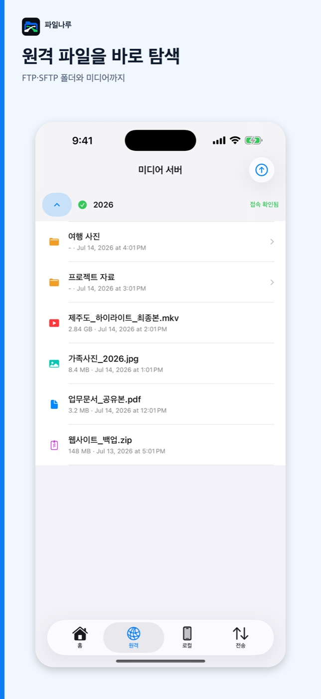
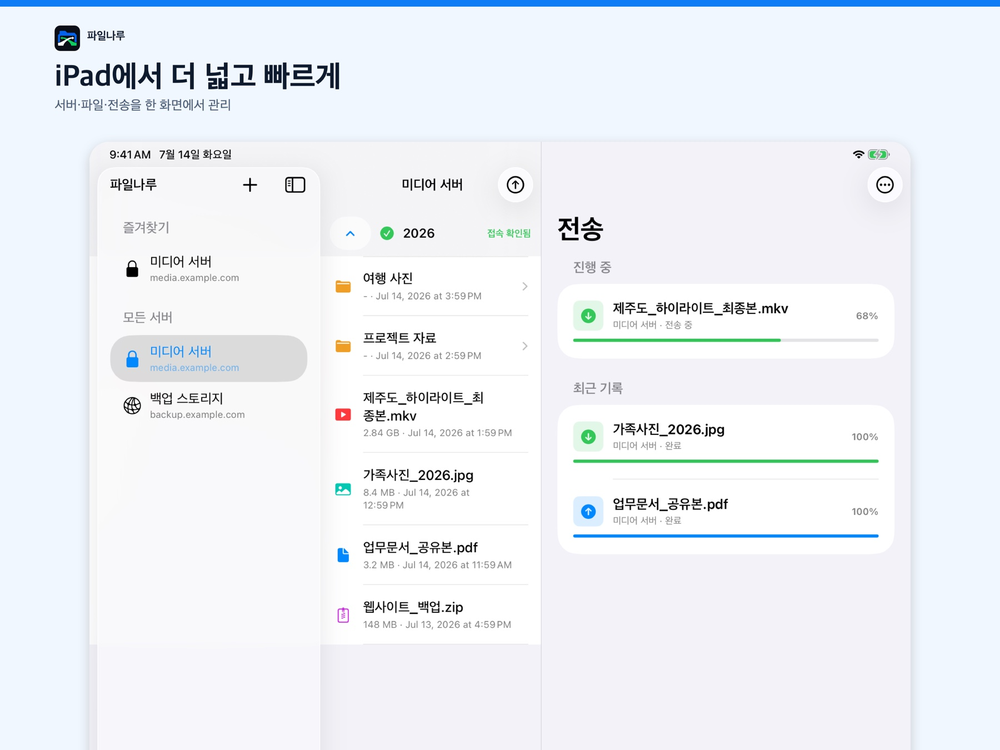

FTP · FTPS · SFTP FILE MANAGER
파일나루
아이폰과 아이패드의 파일, iCloud, 원격 서버를 한곳에서 탐색하고 전송하세요. 이미지와 동영상은 바로 미리보고 재생할 수 있습니다.
서버와 내 파일 사이를 더 빠르게
반복되는 파일 작업을 짧고 명확하게 처리할 수 있도록 원격 탐색, 로컬 선택, 전송 현황을 한 흐름으로 구성했습니다.
다양한 서버 연결
FTP, FTPES, FTPS, SFTP 서버를 등록하고 연결 정보를 언제든 편집할 수 있습니다.
업로드와 다운로드
여러 파일을 선택해 업로드하고 다운로드 위치와 진행률, 출발지와 도착지를 확인할 수 있습니다.
미디어와 문서 미리보기
이미지, 동영상, PDF와 문서를 앱 안에서 확인하고 MKV 등 다양한 동영상 형식을 재생합니다.
로컬과 iCloud
사진 라이브러리, 앱 내부 Downloads, 파일 앱과 iCloud Drive에서 파일을 선택할 수 있습니다.
iPad 전용 화면
서버, 원격 파일, 전송 현황을 동시에 볼 수 있는 넓은 3단 분할 화면을 제공합니다.
연결 정보 보호
서버 비밀번호는 iOS 키체인에 저장되며 사용자 파일은 선택한 서버와 기기 사이에서 직접 전송됩니다.
iPhone과 iPad에 맞춘 화면
작은 화면에서는 빠른 탭 탐색을, iPad에서는 넓은 작업 공간을 제공합니다.


파일나루는 별도 회원가입을 요구하지 않습니다. 서버 정보와 전송 기록은 기기에 저장되며, 자세한 내용은 개인정보처리방침에서 확인할 수 있습니다.